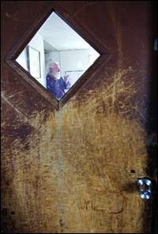

“Whenever you hear a man prating about the Constitution, spot him as a traitor.” This instruction was given by President Andrew Johnson during the military occupation of the conquered southern states as a means of winnowing out the real troublemakers for special treatment.
Today, being described as a “constitutionalist” can have fatal consequences – as in death-by-government consequences.
The precise definition of “police state” may be elusive, but this one is suitable for our purposes: A police state exists anywhere an innocent, law-abiding family can have its home violated, and their lives threatened, by a paramilitary strike team -- who abducts one of the children at gunpoint -- as the result of an anonymous phone call. Boiled down to its essentials, this is what happened to the Shiflett family of New Castle, Colorado.

Glenwood Springs Post-Independent
Last Thursday (January 3), 11-year-old Jon Shiflett fell and hit his head while attempting to grab the handle of a moving car. His father, 62-year-old Tom Shiflett, is a Vietnam veteran with adequate medical training to deal with minor emergencies of this sort. He's also something of a curmudgeon, a bearded patriarch who has raised ten children, home-schooling them all and raising them in commendable isolation from our depraved popular culture.
A few years ago, Tom reportedly chased away one of his daughter's undesirable suitors with an axe. He was charged with felony menacing, but the case was dismissed under Colorado's “Make My Day” law, which may be one of the more enlightened enactments in the history of that or any other state. The young male in question reportedly trespassed on the family's property and spent a half-hour making threats before Shiflett chased him away. And it was Shiflett, not the supposed victim, who called the Sheriff's Department.
As the father of two young daughters, I understand Tom's reaction and admire his restraint: If a two-legged predator were lurking near one of my daughters with malign intent I doubt I'd give him a warning and a fifty-yard head start.
After Jon injured himself, local paramedics materialized at the Shiflett home and entered it uninvited. Tom was reportedly curt with them, but allowed them to examine his son. As the medical personnel described the incident, Tom was abusive and threatening.
This account was disputed by a neutral eyewitness, Ross Talbott, who manages the Apple Tree Mobile Home Park where the family lives. Talbott told the local paper that it was the paramedics, not Shiflett, who acted “belligerent,” and that Tom – his undeniable crustiness notwithstanding – didn't yell or otherwise abuse the uninvited visitors.
In that adjective -- “uninvited” -- the problem resides. Tom was capable of caring for his son. He didn't call the ambulance, and wasn't interested in incurring a huge service fee for an unnecessary hospital trip. The paramedics arrived because some local resident, impelled by civic-mindedness – or by the buttinski instinct, which is pretty much the same thing – called 911.
But Jon was already receiving competent medical help from a loving and highly motivated caregiver. Tom and his family (wife Tina and six children still at home) didn't want outside help, and “help” inflicted on an unwilling recipient is sometimes better considered a form of abuse.
So the ambulance service turned to the local magistrate and department of official child abduction and got a court order to take Jon in for a medical evaluation. Two social workers materialized at the Shiftlet's door to inform Tom that his son had to be taken in for treatment. It's not difficult to imagine Tom's reaction, which – given the fact that the government pests were able to leave under their own power – was another miracle of self-restraint.

Garfield County Sheriff Lou Vallario (who, appropriately enough, shares a name with a Genovese mob family kingpin) claims that Shiflett's reaction left him with no alternative but to dispatch the Garfield County “All-Hazards Response Team” to enforce the treatment order.
“Our history with him [Shiflett] shows that he can be violent,” commented Sheriff Vallario. “I knew he wasn't going to comply with us, I knew that he had to comply with this order, so I felt like for the safety of everybody that the All Hazards Team should be called and help to support the Sheriff's Office in this.”
See if you can wrap your mind around what passes for Vallario's reasoning here:
An 11-year-old boy got a bump on his head. His father is a retired Army medic who prefers to be left alone with his wife and several other children. There's a court order requiring that the child receive competent medical treatment. So rather than making a low-key visit to ask if the youngster is all right, you send in the jackboots late at night, locked, cocked and ready to rock.
Yeah, that's the safer approach. Everybody knows that the best way to see to a child's safety is to fill his small living space with masked, armed strangers who throw his father, mother, and siblings to the floor and seize him by force.
In fact, according to a letter Tina sent to WorldNetDaily (which broke this story), the Sheriff actually pretended to be making a friendly, informal visit as a way of luring Tom into letting him talk with Jon.
(Continues after jump)

Garfield County's "All-Hazards Response Team," a fully-funded subsidiary of the Department of Homeland Security: You remember all the engineered hysteria about "citizen militias" a decade and a half ago? How we were told it was dangerous for middle-aged white guys to deck themselves out in military drag and play with guns? Well ... the citizen militias pretty much evaporated, but outfits like this -- the Garfield County "All-Hazards Response Team" -- have pullulated across the countryside like mushrooms in cow manure. Not a single person was ever killed by a member of a "citizen militia," but people are killed every single week by gun-toting onanists like these guys.
“As soon as Jonathan was visible to the sheriff, a SWAT team appeared shining lights on Jon's face and others were bashing at the door with a ramming device,” recounts Tina. “My daughter resisted and pushed against the door to stop them as she didn't know who they were. I told her to back up and not try to fight them. They then entered our home, held a gun to my daughter's face and others of them, five or more, rushed into the living room and forced my other children to the ground.”
Such heroism.
The assailants seized Jon – who was utterly terrified -- to take him to the hospital, warning that if his parents or family tried to visit him “criminal charges would be pressed against us.”
Jon was returned about three hours later. The government-licensed health care workers certified that the youngster had been getting adequate treatment at home. Not a particle of evidence was found that the boy had suffered abuse or neglect. Drawing from the “Well, Duh” handbook of basic first aid, hospital officials recommended that Jon ice his injury, drink plenty of fluids, and receive Tylenol to relieve pain and inflammation. All of this was being done by Jon's father, mind you, but since it didn't have the government's imprimatur, it didn't count, or something.
None of this was necessary. But all of it was inevitable. In justifying this attack, Sheriff Vallario – who really needs the kind of attitude adjustment the likes of Chuck Liddell could administer – claimed that the use of a strike team was necessary because Tom Shiflett is a "self-proclaimed constitutionalist.” Which means he's a law-abiding man who is both reluctant and willing to use force when necessary and proper.


Tom Shiflett, seen through the door that was forced open with a battering ram during the police assault on his home.
Glenwood Springs Post Independent
Remember this well: The primary reason our country is afflicted with SWAT teams is not to protect the public from violent crime. At present, the primary mission of SWAT, as is the case with most of what we call “law enforcement,” is the collection of revenue, primarily through the lucrative, murderous fraud called the “War on Drugs.” On occasion, SWAT or tactical teams actually conduct hostage rescues or intervene to protect the public from violent criminals, but that's a mere lagniappe.
An important secondary purpose of SWAT teams that will eventually become their primary function in the emerging Homeland Security State is the role they play in beating down people who don't grovel. I can't say it any plainer than that.
And let there be no misunderstanding here: This was an assault by the Homeland Security State, because nearly all of the funding for the Garfield County All-Hazards Response Team comes from the Department of Homeland Security.
Sheriff Vallario, who heads a local joint drug task force called TRIDENT and has experience with the DEA and training at the FBI Academy in Quantico, Virginia on his resume, is typical of the new breed of “local” sheriffs and police: His role is to administer the Regime's policies, not to protect the rights and property of those living in his community. His histaminic reaction to a “constitutionalist” illustrates this perfectly (as does his enthusiasm for incremental civilian disarmament).
Beginning about thirteen years ago, police agencies across the nation have been catechized about the dangers of “constitutionalists” -- that is, people who have no gift for groveling. The most notorious example of this indoctrination was a pamphlet distributed by the Phoenix FBI office in 1999 and publicized in late 2001 by firearms activist Angel Shamaya. That document instructed police officers: "If you encounter any of the following, call the Joint Terrorism Task Force."
The very first category listed in the document - and, presumably, the single greatest danger - was "Right Wing Extremists," specifically "'defenders' of US Constitution against federal government and the UN (Super Patriots)." Interestingly, although peaceable disciples of Madison were listed as potential terrorists, radical followers of Mohammed didn't make the cut.
Several years earlier – April, 1996 to be exact – a consultant named John J. Nutter of the Ohio-based Conflict Analysis Group held a seminar in Oklahoma City entitled "Criminal Justice and Right-Wing Extremism in America." About 500 law enforcement personnel attended the event.
The syllabus from Nutter's seminar describes "right-wing extremism" as a "lightning rod for the mentally disturbed" and a movement which threatens "assassination, mass murder, and armed uprising." To help law enforcement deal with the "danger" from the right, Nutter offers an extensive list of "Potential Warning Signs." "Each of the following indications by itself might not mean an individual is active in an extremist group, or planning violent or criminal activity," the outline stresses. "However, if you observe one of them, better look for others."
Symptoms of someone suffering from incipient terrorism syndrome, according to Nutter, include "militia symbols" such as "firearms lapel pins, bumper stickers or window decals about the New World Order ... 'I fear the government that fears my gun' ... or 'Don't Tread on Me' flags."
Other stigmata of extremism listed by Nutter include expressing concern about a loss of national sovereignty, collecting gold or silver coins, or expressing contempt for the Federal Reserve and a desire to restore the gold standard. So presumably a “Ron Paul for President” yard sign would be considered a warning sign under this standard, as well. (Nutter went so far as to list The Law by Frederic Bastiat -- a tract that reflects its author's comprehensively non-violent views -- as the type of literature a potential right-wing terrorist might possess. Oh, and he listed one of my books, as well.)
Similar profiles were presented in Project Megiddo, the immensely foolish FBI report (is there any other kind?) published in 1999, as well as more recent documents distributed by the state governments of Alabama and Virginia(.pdf). And now we see the Sheriff of Garfield County, Colorado actually acting on that assumption in a SWAT raid that needlessly terrorized an innocent family and endangered the lives of six children.
A not-entirely-gratuitous plug....

The incident in Garfield County is a timely illustration of the central themes of my new book, Liberty in Eclipse: The War on Terror and the Rise of the Homeland Security State. It's available for sale on-line at e-bay, and will soon be available (I promise!) through Amazon and other major retailers.
Dum spiro, pugno!
43 comments:
Your plugging worked. It's pay day and I got myself a book! I'm going to read it then spread it around my family like a bad cold.
26 yr old mother of six double tapped while holding 14 month old son who was also injured....courtesy Lima Ohio SWAT on 1/7/07
Instead of awaiting a first degree murder bond hearing, Ze "veteran" sargento shooter is on paid holiday until investigation is complete. The "subject" of the warrant was already in custody and downstairs at the time.
If the Sheriff did lie to about just wanted to see the son, and then storming the house, then it is hard to believe anything else the Sherif says.
Oh, come on now, folks. Don't you know that the nice policeman is our friend? Don't you know that only bad people have to be afraid of Mr. Policeman?
'Scuse me now, please; I have to go check under my pillow to see what the Tooth Fairy has left there for me.
I hope the book will be available at physical locations so I can pay cash. Then again, I'm sure I'm already flagged.
Mr. Grigg, I think you fit the Fatherland Security state's profile of a 'right wing extremist' terrorist perfectly. Let's go down the list
-Patriot who believes in the US Constitution, including the pesky 2nd amendment
-member of the John Birch Society
-Support Ron Paul for president
I am afraid I will have to contact our local sturmabteilung, er I mean
local Homeland Security office to warn them about the security risk that is you.
Heheh. Keep up the good word Grigg. (I am all of those things as well :P)
Government fears anyone who wants to be left alone, because they want you to be dependent upon them for everything. Entitlements; "safety" from shadowy eternal enemies; whatever. As long as you "need" government, they are happy because they can control you. The more self-sufficient you are, the more likely you are to view any interaction with the government as an unwelcome intrusion. They need to snuff those people out before they spread the notion of liberty. "Government is force," as Washington said, and force is the enemy of liberty.
Stalin would have had Paul killed and erased from all photographs. And here we are in America, with all sides working hard to erase Ron Paul -- http://preview.tinyurl.com/2kpljc -- because he represents the end of their little statist party.
P.S. You win bonus points for the clever use of "onanists." :-)
I don't care if I am flagged, (I would be ashamed if I were not already in this society) but I can't use eBay. You can sell them yourself on Amazon marketplace and ship from anywhere.
A number of years ago I read (purchased and still have) a book that had been out of print for some time titled "They Thought They Were Free" by Milton Mayer. I haven't looked through that book in a long time but it still has dozens of book marks from that reading. Mayer, a Jew who escaped the holocaust, went back to Germany after the war to try and understand how a people had let themselves sink into fascism and in so doing lived a couple years in a small community getting to know the people that lived there. Though I could no doubt use a refresh on the contents the things that struck me the most were comments from those he interviewed who said things like "the Nazi's made the trains run on time" and "the Nazi's provided programs for the youth". Even then, from reading those comments, I felt this country was badly misguided. I feel more so now especially with events like this one which I have followed from several news outlets.
Since when does being strongly inclined towards adhering to the very documents that give this government any semblance of authority constitute being radical? Since when do rights 'only exist on TV' (an officer's quote from another story)?
After the Nazi experience, I think most of amerika sat back and said "why didn't they do something" or "why didn't they rise up". Despite my deeply held libertarian principles of non-aggression I find myself more and more asking if this isn't the time to stand up against our very own amerikan fascism.
We will not stop this through the political process and it will not be a top down reconciliation with constitutional principles. Until the work-a-day government employee, the gears that keep the system running, fears the consequences of their profession at the hands of those they oppress more than missing their next theft funded paycheck NOTHING will change. And it distresses me greatly to admit, if only to myself, that that is the only solution left.
For those who visited the TinyURL link in my other comment, you'll know that FOX had the clip pulled from YouTube. I've re-uploaded it, if you're interested. This is what FOX news doesn't want you to see: http://youtube.com/watch?v=DPHDxMoieoQ
Sorry for going off topic, I'm not trying to thread-jack.
So much is going through my mind right now after reading this article…God bless that magnificent document!...do I dare say its name? You bet I dare!!! God Bless the CONSTITUTION!!!!!!! It was drafted to protect us from the tyranny and oppression that our forefathers escaped from. I am stunned that these very cancers are being embraced under the guise of the United States government! That freedoms fought for, died for are being systematically erased. Hey wait…am I on a list now?!!!! It’s about Gee darn time I am tired of being picked last!
I know this area of Colorado and the Applewood Estates area of New Castle. It is an area of largely middle to lower middle class people trying to make it in the Glenwood Springs area (a tourist area with lots of money if you are the right person). Salt of the earth types who are self reliant and will give you the shirt of their backs if they can. This story is very sad but it is telling of the times in which we live in.
We don't deserve this, but we saw it coming and good men stood by and did nothing. 9-11 just added fear of terrorism to the arsenal of the state.
The latest thing I saw on a ski trip to Copper Mountain was 3 Sherrif Deputies in black battle rattle and riding snow boards. I overheard a conversation with another skier that indicated that they are volunteers and get a ski pass to be on the mountain. It was really irritating to see that kind of state presence in a recreational area. The water is getting a little hotter folks.
Living as I do in 'red state' country, which is to say counties - no state being entirely 'blue' or 'red' - the people here often see battle rattled Officer Jack Boot as their proxy or hero against an ACLU-supercharged delinquent, criminally inclined, and necrotic society. Such a view makes them easy prey for the puppeteers who, if you read/listen between the lines, pledge continued social upheaval via the twin toxins known as Multi-culturalism and Diversity - not to mention endless wars, economic decline, and the constant 'threat' of 'terr'. Everybody wants to believe in the tooth fairy it seems. And when you point out that the tooth fairy has a taser (and worse) aimed squarely at them, the law abiding, they run for the 'protective' apron of disbelief and try very hard to hide!
Tom Shiflett allegedly told the sheriff that if he wanted his son he would have to being an army. Obviously, the sheriff has small man syndrome, so this rubbed his fur the wrong way. He had to show Shiflett who was boss. This had nothing to do with concern for the boy.
From AFRA storage- helps clarify story
http://familyrights.us/educate/reno/elian.jpg
On the morning of April 22, 2000 Attorney General Janet Reno woke to a very big problem: a series of seven pictures, snapped by AP photographer Alan Diaz, of agents seizing 6-year-old Elian Gonzalez. Television and the Internet displayed images of a terrified child confronted by a heavily armed, helmeted, goggled, body-armored commando.
Polls taken that weekend indicated that a plurality of Americans were troubled by the raid’s brutality. People understood the images as illustrating a disturbing level of government force in an American Home." By Charles Paul Freund- REASON July 2000
[note: I guess this is more of a personal message than an actual comment, so there's no need to actually publish the comment.]
Quote:
([John J.] Nutter went so far as to list The Law by Frederic Bastiat -- a tract that reflects its author's comprehensively non-violent views -- as the type of literature a potential right-wing terrorist might possess. Oh, and he listed one of my books, as well.)
End Quote
Please, please do you happen to recall the title of this particular book?
In my patriotic fervor, I feel duty-bound to
to personally investigate literature deemed "subversive." You know, just in case the experts overlooked something (these thing can happen!).
Of course, it's impossible to be of any assistance to the authorities without acquiring my own copy to peruse.
(All kidding aside, I would be grateful if you could name the book. I really would like to acquire a copy.)
Mr. R. Subversive:
I admire your diligence in ferreting out subversive literature.You're nothing if not thorough!
The book in question was entitled "Freedom on the Altar: The UN's Crusade Against God and Family," and it was published in 1995.
Be warned that this book peddles several varieties of unvarnished anti-globalist and other seditious sentiments.
Yes. This situation in Colorado is one of many. I really hope this little boy is OK. Reminds me of the Elian Gonzales situation when a very small child was victimized.
I was pulled over in Illinois and given a "warning" by a *canine* unit for speeding while going 67 in a 65 zone. I had a JPFO sticker on my car, and a Michael Badnarik for Pres. one. I think it was in '05. I was "cordially invited" to sit in the police car. Everything was polite and cordial and I put on an act of not having a clue. But they were not fooling me. At least nothing was planted.
So, everyone is in danger all the time.
Anyway, see my own blog at http://www.alicelillieandher.blogspot.com
Go Ron Paul!
My son was stolen by the government. Please pray for us. He is six years old now. I know alot about my son and of course I intend to raise him.
Milton Mayer...the opening to the book is chilling to read. Here it is.
"What happened here was the gradual habituation of the people, little by little, to being governed by surprise; to receiving decisions deliberated in secret; to believing that the situation was so complicated that the government had to act on information which the people could not understand, or so dangerous that, even if the people could not understand it, it could not be released because of national security....
"This separation of government from people, this widening of the gap, took place so gradually and so insensibly, each step disguised (perhaps not even intentionally) as a temporary emergency measure or associated with true patriotic allegiance or with real social purposes....
"To live in this process is absolutely not to be able to notice it -- please try to believe me -- unless one has a much greater degree of political awareness, acuity, than most of us had ever had occasion to develop. Each step was so small, so inconsequential, so well explained or, on occasion, ‘regretted,’ that, unless one were detached from the whole process from the beginning, unless one understood what the whole thing was in principle....one no more saw it developing from day to day than a farmer in his field sees the corn growing. One day it is over his head.
"How is this to be avoided, among ordinary men, even highly educated ordinary men? Frankly, I do not know. I do not see, even now. Many, many times since it all happened I have pondered that pair of great maxims, Principiis obsta and Finem respice -- 'Resist the beginnings' and 'Consider the end.' But one must foresee the end in order to resist, or even see, the beginnings. One must foresee the end clearly and certainly and how is this to be done, by ordinary men or even by extraordinary men? Things 'might' have. And everyone counts on that 'might.'
"Each act, each occasion, is worse than the last, but only a little worse. You wait for the next and the next. You wait for one great shocking occasion, thinking that others, when such a shock comes, will join with you in resisting somehow. You don’t want to act, or even talk, alone; you don't want to 'go out of your way to make trouble.' Why not? -- Well, you are not in the habit of doing it. And it is not just fear, fear of standing alone, that restrains you; it is also genuine uncertainty.
"Uncertainty is a very important factor, and, instead of decreasing as time goes on, it grows. Outside, in the streets, in the general community, 'everyone' is happy. One hears no protest, and certainly sees none....
"And one day, too late, your principles, if you were ever sensible of them, all rush in upon you....The world you live in -- your nation, your people -- is not the world you were born in at all. The forms are all there, all untouched, all reassuring, the houses, the shops, the jobs, the mealtimes, the visits, the concerts, the cinema, the holidays. But the spirit, which you never noticed because you made the lifelong mistake of identifying it with the forms, is changed. Now you live in a world of hate and fear, and the people who hate and fear do not even know it themselves; when everyone is transformed, no one is transformed. Now you live in a system which rules without responsibility even to God. The system itself could not have intended this in the beginning, but in order to sustain itself it was compelled to go all the way."
They Thought They Were Free by Milton Mayer
([John J.] Nutter went so far as to list The Law by Frederic Bastiat -- a tract that reflects its author's comprehensively non-violent views -- as the type of literature a potential right-wing terrorist might possess. Oh, and he listed one of my books, as well.)
This I assume was the same John J. Nutter who just got popped for downloading kiddie porn on his office computer!
What, no mention of belonging to the Mises Institute or FEE, or reading LewRockwell.com? Not a very exhaustive listing of right-wing tendencies.
I was pulled over for a broken bulb on my license plate while in NH, campaigning for Ron Paul, with a Ron Paul sticker clearly displayed. Anyone who thinks the primary problem was the light please raise your hands.
The scary thing is that we know government computers monitor our words and a large part of our behavior. Although perfectly legal, this can earn us an asterisk by our name in those government computers. Then a complaint by any busybody fogy can earn us a response like this family experienced.
Be a good sheep and you are safe. Be a government-designated "dissident" and you are in the East Germany of the 70's. And it will rapidly get worse.
I don't know why anyone retiring today would choose to remain in the US. I retired (early) in 2000 and despite my better judgement, stayed. Now, after some systematic harassment by the local piggies, I am getting out. But I have lost years and will lose $$$'s due to the housing collapse.
I live in corrupt Colorado, and this kind of thing does not surprise me. My kids were taken away from the Fremont County Nazis (DHS & Family Courts), totally based on hearsay and false allegations! This is a leftie lesbian place where the judge is immoral & the intake worker for DHS doesn't even have any children! It's already proven that social services steals children for money. Ron Paul for President!
Thanks for reminding why I'm an anarchist.
Fantastic report and now that we have all read the report and commented on it , we can now all turn our self in beacuse we are "Thought Criminals" Thanks to the HR 1955 George ORwell law we have.
Every one report to the govt mind reprograming centers for further instruction.
Sic Semper Tyrannis
That quotation from Andrew Johnson says much about the early days of the Republican Party as well as the state of mind that prevails in the Grand Old Party today. I have found that one way to make onself an unpopular minority at a Republican gathering today is to speak up for the Bill of Rights. If you go "prating" about the Bill of Rights, you will be spotted as a "traitor." The only right either party will defend today is your "right to reamin silent."
[If you go "prating" about the Bill of Rights, you will be spotted as a "traitor." The only right either party will defend today is your "right to reamin silent."]
What's even worse about the present state of political discourse is that if you dare to speak out against the status quo, you come across as some kind of "weirdo," regardless of the facts or logic you employ to help make your point.
Someone pointed out that that's the real genius of the our political class: not only have they brought our country to a new level of absurdity, but they've done it in such a way that if you dare to point out just how silly things are you are the one that ends up looking like the oddball.
Such subtle manipulation would actually be quite admirable on a purely intellectual level...if I weren't living here and subjected to the consequences on a day-to-day basis, that is.
[If you go "prating" about the Bill of Rights, you will be spotted as a "traitor." The only right either party will defend today is your "right to reamin silent."]
What's even worse about the present state of political discourse is that if you dare to speak out against the status quo, you come across as some kind of "weirdo," regardless of the facts or logic you employ to help make your point.
Someone pointed out that that's the real genius of the our political class: not only have they brought our country to a new level of absurdity, but they've done it in such a way that if you dare to point out just how silly things are, you are the one that ends up looking like the oddball.
Such subtle manipulation would actually be quite admirable on a purely intellectual level...if I weren't living here and subjected to the consequences on a day-to-day basis, that is.
To 'goldhorder' - Thank you for posting Mayer's intro. It made my point far more eloquently than I did. I still recall that my feeling all through that book that it described what I have seen here, now, today over the course of my adult life.
I knew that things were getting real bad real fast after what happened to Doug Thompson from Capitol Hill Blue, but DAMN this is just over the top!!
It's at the point that the really smart thing to do now is to quietly seek out other "extremeists" and band together. Form underground communities. This is not the time to wear red pants and bring undue attention to yourselves.
I may come across as a traitor for saying what I'm about to say next, but after reading this article, all real Constitutionalists need to understand that they need to stay out of jail or worse.
Tone it down people. The bumper stickers, the yard signs, etc. Do not talk politics to obvious maniacs of the New World Order.
I virtually never quote the Bible, but I keep thinking of a verse from the New Testament that seems very appropiate from here on out.
It's going to get a whole lot worse real soon. Count on it.
"Be as wise as serpents, but harmless as doves."
Forgive my ignorance, but what happened to Doug Thompson from CHB?
I know that the fellow who runs the "Welcome to Pottersville" blog just had his checking account seized by Citizens Bank because of something he wrote, and I just read this morning about a blogger in Arizona who's being bullied by the local municipal government because he endorsed the people running against the incumbents.
So things are getting nasty all around. I wasn't aware of anything that had been done to Doug Thompson.
No doubt they act like that in New Castle, Colorado is fertile groun,nobody has any idea what the constitution really says. Most of the western slope is old crony good old boys, and they don't respect any law but their own.
What's more, the aspen institute just up the road no doubt accomplices these crazed attitudes.
I know all about SWAT. My husband has severe anxiety disorder, bipolar disorder, and PTSD. The State Police raided and tore apart our entire home, totally unexpectedly, using a bogus search warrant which was obtained using a fabricated story (no probable cause). Nothing but a very small amount of marijuana for personal medical use was found. The lead cop, who was aware of my husbands condition, decided to leave all guns and other weapons alone rather than confiscate them as is standard practice in "drug" raids. This unexpected raid caused my husband to have a severe attack. He thought he was back in Cambodia and began readying his guns for an attack. I attempted to get an emergency mental health order so that my husband could be treated properly for his condition right away. The State Police officer and the 9-11 operator BOTH lied to me, telling me that they would send out a couple cops and an ambuilance to get him and take him to a mental facility, and the next thing I knew a SWAT TEAM was called to our quiet neighborhood. They swarmed the entire area, evacuated neighbors, closed roads in a 3 mile radius, brought in two helicopters,it took 5 hours...
When they "found" him, he was sitting in his truck doing nothing, no weapons of any kind anywhere around him, but they pointed all their guns in his face and threatened to kill him if he moved...They pointed their guns in A LOT of people's faces that day, including mine.
Then they hauled him off to solitary at the jail with no treatment what so ever except to be treated like an animal for 2 weeks until I was able to make bail. We got him the help he needed on our own, without their help, thank-you-very-much.
Of course part of the conditions of bail require him to stay away from me, assuming that I was a "victim"... "What god brings together let no man break asunder" and all that, you know...
And of course my husbands new meds keep him pretty out of it so he NEEDS someone to look after him...
But they would rather create a dangerous situation for him and make my life miserable as well. We've tried to get the orders changed, but no luck no matter what...
And in the end, the pot charges were dropped because they "lost" the evidence... They charged him with 2 counts of "wanton endangerment" even tho it actually could MAYBE be considered as 1 count of brandishing... But the State Cops managed to get TWO illegal searches out of the deal (my house AND the neighbors house) and they SHOT HOLES THRU THE NEIGHBORS FRONT DOOR AND HIS AIR CONDITIONER themselves to make it look like my husband did it!!!!!(wrong kind of gun, but I suppose it gave them the excuse they needed to search that house)...
Anonymous @ 12:04 -- What a horrible story. Could you possibly contact me directly, via WNGrigg[at]msn[dot]com?
Well, I love to hear everybody complaining about this situation, however, no one will do anything to actually change the course we are on. The answer is just to diffacult to except, and to hard for anyone to carry out. You'll will all be nice sheep and do as you are told, conform, you have no choice or will to fight it. Just except your fate and it won't hurt so bad.
Thanks William for this enlightening post
May God continue to bless and keep you and your family
classic cps fascism. if interested read 'wounded innocents' regarding the excessive actions of cps backed up by law enforcement.
all politics are local... so this is local fascism.
another note, 'it can't happen here' by sinclair lewis.
thank you, ssg a
So, when will the word "revolution" not sound so unamerican? When will WE THE PEOPLE decide to ACT OUT? Because unless we do something, anything to preserve our humanity in the face of this monstrous juggernaut, soon we will have to whisper, fearing even that will be overheard. Put me on the list! Fascism is not acceptable here! Police state/Soviet style actions against us ARE NOT ACCEPTABLE EVER! And no, I am not an anarchist, I am a (gasp) constitutionalist! I despise tyranny. I would rather be marked for "re-education" than not be marked at all, just one of the sheep. Stop voting, ppl! Get over the high school dreams of yesteryear, and REALIZE that the daddy you thought you had, has become the dragon spoken of in Revelations....I mean, whats it gonna take, folks?
{This may be a duplicate post. I'm afraid the "preview" feature doesn't seem to work well with my browser}
[Well, I love to hear everybody complaining about this situation, however, no one will do anything to actually change the course we are on.]
Well, what would *you* suggest we do?
Every day I look through the MSM, scouring it for even a sentence or two on Ron Paul; I search in vain.
What, exactly, is the point in participating in a political process that, it's painfully clear, was bought and paid for long ago?
Speaking for myself, I think the best way to
"change the course" of the system is to quietly withdraw my support from it. I don't ask anything from it and, therefore, it has no right to ask anything of me. That's about as fair as I can make it.
And, yes, I know how cowardly that sounds, but I just don't see the point in actively participating in
a system that not only doesn't represent my interests, (being left alone to work with other people on a voluntary basis) but *knows* it does not. And yet, regardless, seems to angrily demand my participation anyway.
Sorry for the tardy, and potentially off topic comment, but the ebay link you give to purchase a copy of your book has ended, and I can't find another. Can we order from you directly?
Regards,
Bob
Bob, I'm going to have revised ordering information quite soon. I'm sorry that we don't have the distribution arrangements ironed out -- but I promise to get this worked out as soon as possible.
This is truly a terrible turn of events in the good ol' U.S.A. The Dept. of Homeland Security, FEMA, and all CPS/DHS (child protective services/department of "Human" services) are the instruments of our own oppression.
In IOWA they are ripping families apart at an alarming rate. They steal kids, and elderly...foster homes and nursing homes...horrible. <<< www.savegrandma.org<<< I fear that by the time it is all over, the horrors of the Orwellian nightmare will pale in comparison to what we will have had thrust upon us in the United States.
The fact is, that we as a people must defend our families at ALL cost...To do less makes us lower than the tyrants themselves. To truly call one's self an "American" on must assert those very God-Given rights bestowed upon us and guaranteed by the U.S. Constitution. NOTHING that one does in defense of their constitutional rights (or those of their loved ones) can be considered a crime...In fact, it is YOUR DUTY, as an AMERICAN to defend your liberties! <<< www.savegrandma.org <<< Yes, they will steal your grandmother TOO!
A prayer for America:
God, grant us the wisdom and fortitude to defend ourselves against the eminent onslaught...empower us with your righteous might in removing our oppressors from our midst, that the next day there will be peace...make us an instrument of your will in these things we must do...God save America...Amen
Post a Comment